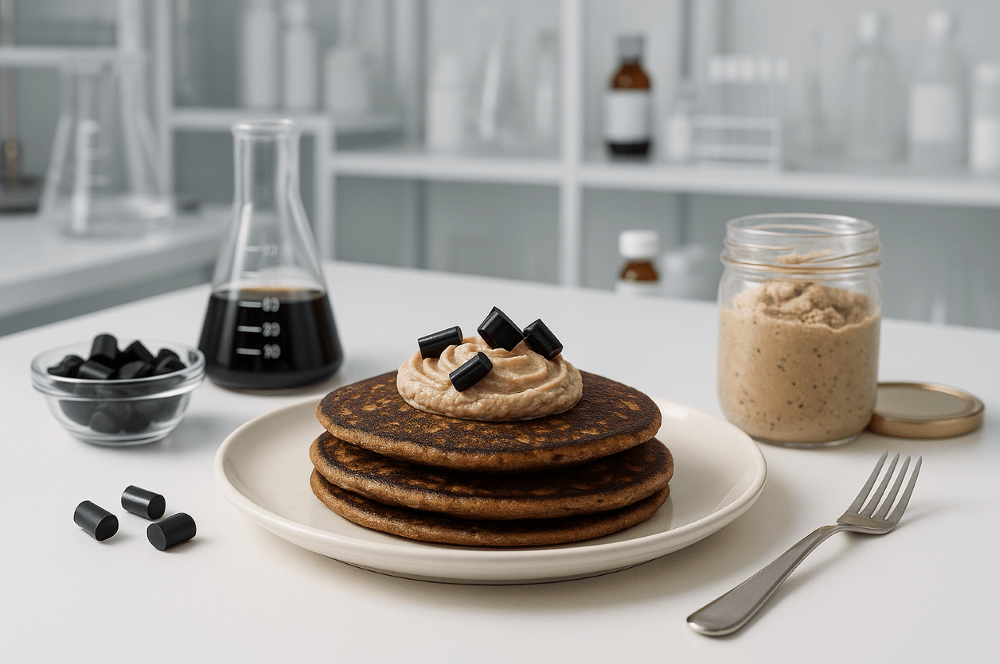
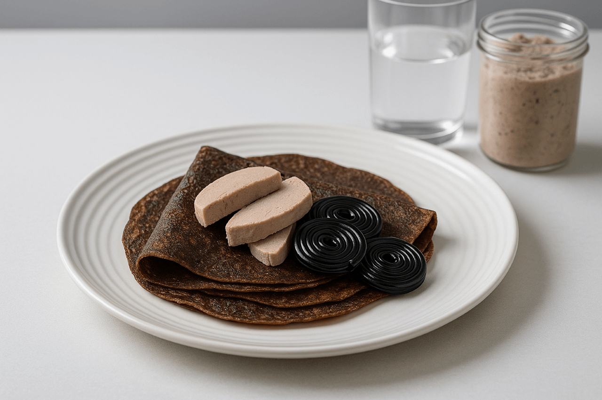

Lakrits och leverpastejp-pannkakor
En oväntad kombination där salt lakrits möter krämig leverpastej och bildar en oförglömlig kontrast mellan sötma, sälta och mustiga toner. Perfekt för dig som vill upptäcka pannkakornas rebelliska, okända potential.
Ingredienser
- 3 dl vetemjöl
- 6 dl mjölk
- 3 ägg
- 1 msk smör
- 2 msk salt lakritspulver
- 150 g leverpastej
Så här gör du
- Blanda pannkakssmeten.
- Tillsätt lakritspulver och stek pannkakor.
- Bred leverpastej på varje pannkaka.
Serveringsförslag
- 
- 